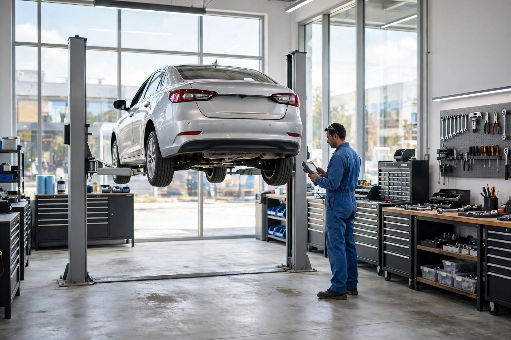
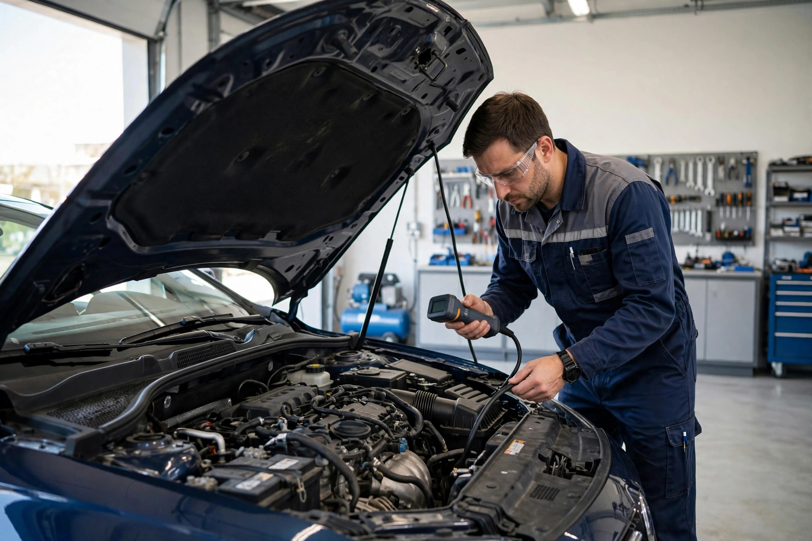
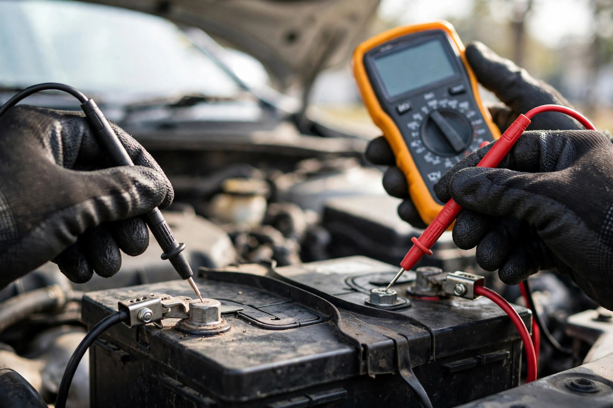
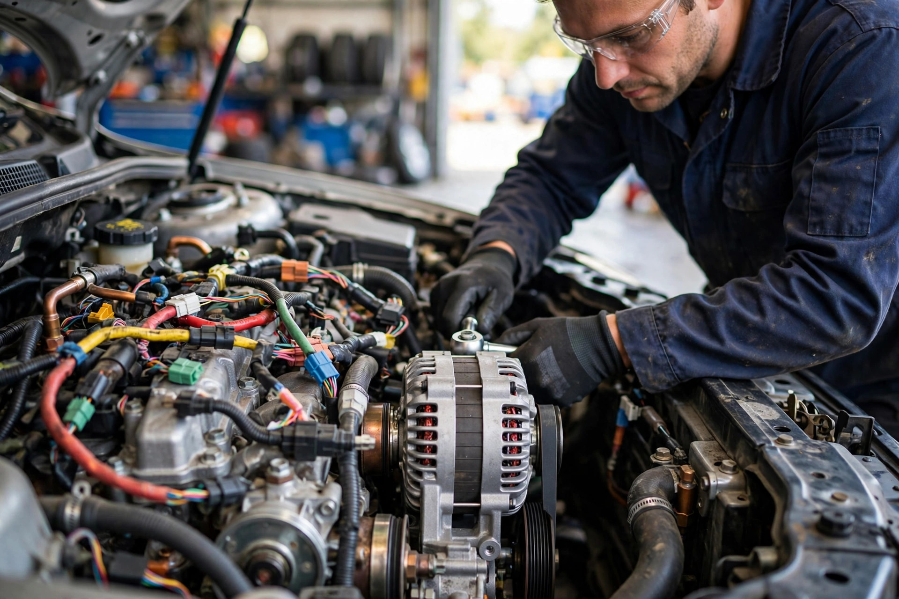

Batteries et charge
Test de batterie, remplacement et vérification du système de charge pour des démarrages fiables.

Lévis, Québec · Électricité automobile · Mécanique
Diagnostic électronique, batteries, démarreurs et alternateurs pour votre véhicule — un travail précis, expliqué clairement, fait pour durer.
Ce que nous faisons
Test de batterie, remplacement et vérification du système de charge pour des démarrages fiables.
Réparation et remplacement de démarreurs et d'alternateurs pour toutes les marques.
Lecture des codes et diagnostic des pannes électroniques avec les bons outils.
Réparation de fils, connecteurs et circuits électriques défectueux.
Phares, clignotants, feux arrière et éclairage intérieur remis en état.
Entretien et réparations mécaniques courantes pour garder votre véhicule en route.

Pourquoi nous choisir
L'électricité automobile, c'est notre métier : on trouve la vraie panne au lieu de changer des pièces au hasard. Prix expliqués d'avance, travail soigné et pièces de qualité.
Sur le terrain


Venez nous voir
Bon à savoir
Difficile à dire sans test : appelez-nous au (418) 933-8342 et on vérifie la batterie, le démarreur et le système de charge pour trouver la vraie panne.
Oui — c'est notre spécialité. On répare et remplace démarreurs et alternateurs pour toutes les marques.
Oui — on fait du diagnostic électronique pour trouver la cause des voyants et des pannes, pas juste les codes.
Au 7002, boulevard Guillaume-Couture, porte 212, à Lévis — appelez le (418) 933-8342 pour un rendez-vous.
Contactez-nous